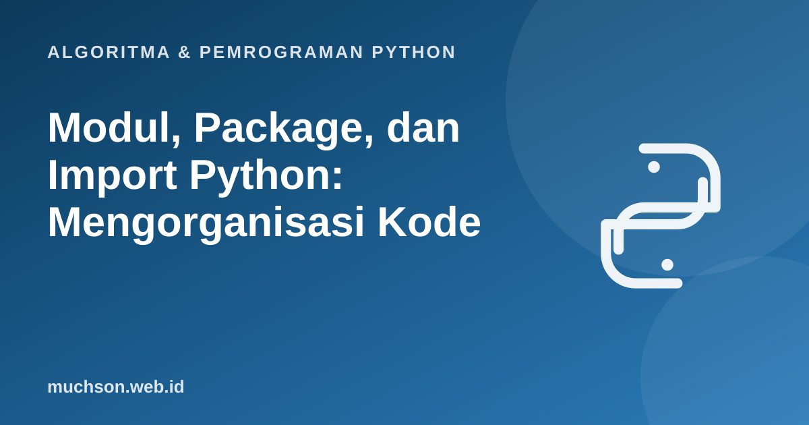

Beranda › Artikel › Algoritma & Pemrograman Python
Algoritma & Pemrograman PythonModul, Package, dan Import Python: Mengorganisasi Kode
Program kecil muat dalam satu berkas, tetapi program nyata tidak. Python mengorganisasi kode lewat modul (satu berkas) dan package (folder berisi modul). Materi ini menjelaskan cara memakai dan membuat keduanya, serta mengapa blok if __name__ == "__main__" ada di hampir setiap skrip yang rapi.
Sebaiknya sudah paham: fungsi Python

Setelah membaca dan mencoba materi ini, Anda mampu:
- memakai pustaka standar lewat import, from-import, dan alias
- membuat modul sendiri dan mengimpornya dari berkas lain
- menjelaskan arti if __name__ == "__main__"
- menyusun package dengan struktur folder yang benar
- mengenali pustaka standar yang paling sering dipakai
Bentuk-bentuk import
import math
from random import randint, seed
import statistics as stat
from datetime import date
print(math.sqrt(144), math.pi)
seed(1); print(randint(1, 6) in range(1, 7))
print(stat.mean([2, 4, 6, 9]), stat.median([2, 4, 6, 9]))
print(date(2026, 10, 23).strftime("%d %B %Y"))12.0 3.141592653589793
True
5.25 5.0
23 October 2026
| Bentuk | Efek | Kapan |
|---|---|---|
| import math | Memakai math.sqrt(...): nama modul tetap tampak | Paling aman dan jelas |
| from math import sqrt | Memakai sqrt(...) langsung | Bila hanya butuh satu-dua nama |
| import numpy as np | Memberi alias pendek | Konvensi komunitas (np, pd) |
| from math import * | Mengimpor semua nama | Hindari: mengotori namespace dan membingungkan sumber nama |
Membuat modul sendiri
Setiap berkas .py otomatis menjadi modul. Misalkan berkas geometri.py berisi fungsi-fungsi, lalu dipakai oleh utama.py di folder yang sama.
# geometri.py
PI = 3.14159
def luas_lingkaran(r):
return PI * r * r
def keliling_persegi(s):
return 4 * s
if __name__ == "__main__":
# hanya berjalan bila berkas ini dijalankan langsung
print("Tes cepat:", luas_lingkaran(2))# utama.py
import geometri
from geometri import keliling_persegi
print(geometri.luas_lingkaran(10))
print(keliling_persegi(5))Apa arti if __name__ == "__main__"?
Setiap modul punya variabel __name__. Bila berkas dijalankan langsung (python geometri.py), nilainya "__main__". Bila diimpor dari berkas lain, nilainya nama modul ("geometri"). Blok tersebut membuat kode uji atau program utama tidak ikut berjalan ketika modul hanya diimpor.
Package: folder berisi modul
# di utama.py
from toko.produk import Produk
from toko import harga
import toko.harga as hPustaka standar yang wajib dikenal
| Modul | Kegunaan |
|---|---|
| math | Fungsi matematika (sqrt, sin, log, pi) |
| random | Bilangan acak |
| datetime | Tanggal dan waktu |
| collections | Counter, defaultdict, deque |
| itertools | Alat iterasi (permutations, combinations, product) |
| json | Membaca dan menulis JSON |
| csv | Membaca dan menulis CSV |
| os dan pathlib | Berkas dan folder |
| sys | Argumen baris perintah, interpreter |
| re | Ekspresi reguler |
| unittest | Pengujian |
from itertools import permutations, combinations
from collections import Counter
print(list(permutations("ABC", 2)))
print(list(combinations([1, 2, 3, 4], 2)))
print(Counter("mississippi").most_common(2))[('A', 'B'), ('A', 'C'), ('B', 'A'), ('B', 'C'), ('C', 'A'), ('C', 'B')]
[(1, 2), (1, 3), (1, 4), (2, 3), (2, 4), (3, 4)]
[('i', 4), ('s', 4)]
Jangan memberi nama berkas Anda sama dengan modul standar (misalnya random.py atau math.py). Python akan mengimpor berkas Anda, bukan pustaka standar, dan menimbulkan error yang membingungkan.
1. Buat modul suhu.py berisi celsius_ke_fahrenheit(c) dan fahrenheit_ke_celsius(f) dengan blok uji di bawah __main__.
def celsius_ke_fahrenheit(c): return c * 9 / 5 + 32
def fahrenheit_ke_celsius(f): return (f - 32) * 5 / 9
if __name__ == "__main__":
print(celsius_ke_fahrenheit(100))2. Apa bedanya import math dan from math import sqrt dari sisi cara memanggil?
math.sqrt(9). Dengan from math import sqrt, panggil sqrt(9) langsung.3. Pakai itertools untuk mencetak semua susunan dua huruf dari "XYZ" tanpa pengulangan.
list(permutations("XYZ", 2)) menghasilkan 6 pasangan berurutan.- Import memberi akses ke modul; hindari from ... import *.
- Setiap berkas .py adalah modul; folder berisi modul adalah package.
- if __name__ == "__main__" memisahkan kode yang hanya berjalan saat dijalankan langsung.
- Kenali pustaka standar sebelum memasang paket pihak ketiga.
Tanya jawab
Apa bedanya modul, package, dan library?
Mengapa import gagal padahal berkas ada?
python -m.Bagaimana memasang pustaka pihak ketiga?
pip install requests. Lihat materi virtual environment.Referensi
- Dokumentasi Python: Modules (tutorial)
- Dokumentasi Python: The Import System
- Dokumentasi Python: __main__ (Top-level code environment)
- Dokumentasi Python: The Python Standard Library
- Allen B. Downey, Think Python (edisi ke-3), buku teks terbuka